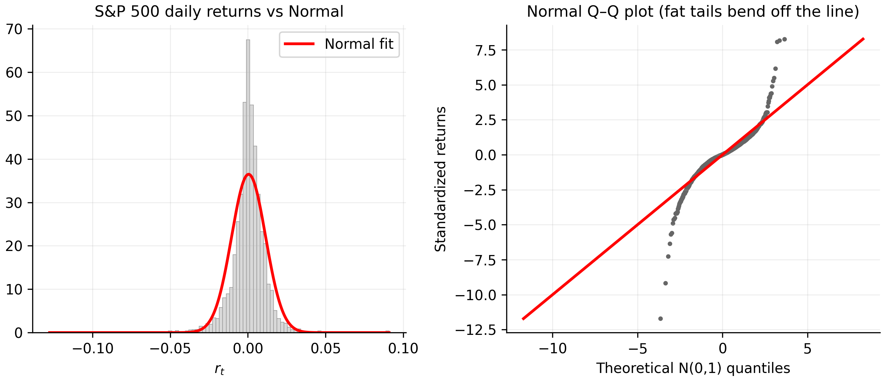
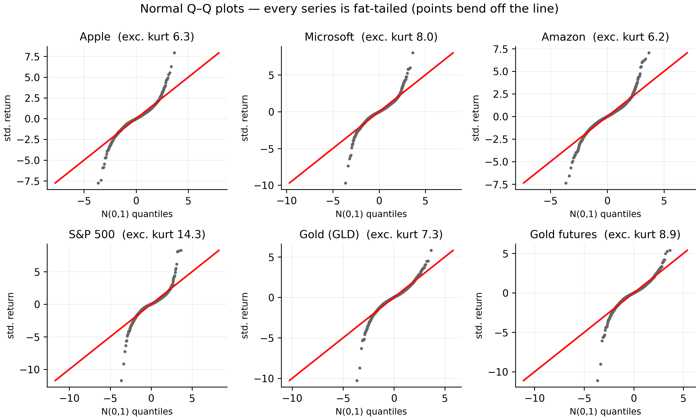

2 Distributional Properties of Returns
In Chapter 1 we established what to model — log returns — and why — they are stationary while prices are not. This chapter asks the next question: what does the distribution of returns actually look like? The answer shapes every modelling decision that follows.
The short version, which Tsay (Tsay 2010) documents and we reproduce on our own data, is that daily returns are emphatically not normal. They are fat-tailed — extreme days happen far more often than a bell curve allows — and mildly asymmetric. Getting this right is not academic: assuming normality is exactly the mistake that makes a risk model blind to crashes.
All statistics in this chapter use log returns over the estimation window (through 2026-07-01), and the code needs only base R.
# Log returns over the estimation window; no external packages needed
est_return <- function(sym) {
df <- read.csv(sprintf("data/%s.csv", sym))
df$Date <- as.Date(df$Date)
df <- df[df$Date <= as.Date("2026-07-01"), ]
diff(log(df$Adjusted))
}
symbols <- c("AAPL","MSFT","AMZN","SPX","GLD","GCF")import pandas as pd, numpy as np
def est_return(sym):
df = pd.read_csv(f"data/{sym}.csv", parse_dates=["Date"]).set_index("Date")
df = df[df.index <= "2026-07-01"]
return np.log(df["Adjusted"]).diff().dropna()
symbols = ["AAPL","MSFT","AMZN","SPX","GLD","GCF"]2.1 The first four moments
A distribution is summarised, to a first approximation, by its first four moments. For a return \(r\) with mean \(\mu\) and standard deviation \(\sigma\):
\[ \begin{aligned} \text{mean } \mu &= E[r], & \text{variance } \sigma^2 &= E[(r-\mu)^2], \\[4pt] \text{skewness } S &= \frac{E[(r-\mu)^3]}{\sigma^3}, & \text{kurtosis } K &= \frac{E[(r-\mu)^4]}{\sigma^4}. \end{aligned} \tag{2.1}\]
The mean measures average return; the variance (whose square root \(\sigma\) is the volatility) measures risk. Skewness measures asymmetry: \(S<0\) means the left tail (losses) is longer than the right. Kurtosis measures tail heaviness; it is benchmarked against the normal, for which \(K=3\). We almost always report excess kurtosis \(K-3\): positive excess kurtosis (a leptokurtic distribution) means fatter tails and a sharper peak than a normal with the same variance.
Given a sample \(r_1,\dots,r_n\), the moments are estimated by their sample analogues:
\[ \begin{aligned} \hat\mu &= \frac{1}{n}\sum_t r_t, & \hat\sigma^2 &= \frac{1}{n-1}\sum_t (r_t-\hat\mu)^2, \\[6pt] \hat S &= \frac{1}{(n-1)\hat\sigma^3}\sum_t (r_t-\hat\mu)^3, & \hat K &= \frac{1}{(n-1)\hat\sigma^4}\sum_t (r_t-\hat\mu)^4. \end{aligned} \tag{2.2}\]
skew_hat <- function(x) { n <- length(x); m <- mean(x); s <- sd(x)
sum((x - m)^3) / ((n - 1) * s^3) }
kurt_hat <- function(x) { n <- length(x); m <- mean(x); s <- sd(x)
sum((x - m)^4) / ((n - 1) * s^4) } # raw K; excess = K - 3
jb_stat <- function(x) { n <- length(x); S <- skew_hat(x); K <- kurt_hat(x)
n / 6 * (S^2 + (K - 3)^2 / 4) } # Jarque-Bera (eq-jb)def skew_hat(x):
x = np.asarray(x, float); n = len(x); m = x.mean(); s = x.std(ddof=1)
return ((x - m)**3).sum() / ((n - 1) * s**3)
def kurt_hat(x): # raw K; excess = K - 3
x = np.asarray(x, float); n = len(x); m = x.mean(); s = x.std(ddof=1)
return ((x - m)**4).sum() / ((n - 1) * s**4)
def jb_stat(x): # Jarque-Bera (eq-jb)
x = np.asarray(x, float); n = len(x); S = skew_hat(x); K = kurt_hat(x)
return n / 6 * (S**2 + (K - 3)**2 / 4)2.2 A summary of our six series
The code below computes the four moments plus the Jarque–Bera statistic (defined in Section 2.5) for each series.
summ <- function(sym) {
r <- est_return(sym)
data.frame(Series = sym, n = length(r),
Mean = mean(r), SD = sd(r), AnnVol = sd(r) * sqrt(252),
Skew = skew_hat(r), ExKurt = kurt_hat(r) - 3, JB = jb_stat(r),
Min = min(r), Max = max(r))
}
do.call(rbind, lapply(symbols, summ))def summ(sym):
r = est_return(sym).values
return dict(Series=sym, n=len(r), Mean=r.mean(), SD=r.std(ddof=1),
AnnVol=r.std(ddof=1)*np.sqrt(252), Skew=skew_hat(r),
ExKurt=kurt_hat(r)-3, JB=jb_stat(r), Min=r.min(), Max=r.max())
pd.DataFrame([summ(s) for s in symbols])The estimated moments (daily returns, in %, over the estimation window):
| Series | Mean | SD | Ann. vol | Skew | Excess kurt | Jarque–Bera | Worst | Best |
|---|---|---|---|---|---|---|---|---|
| AAPL | 0.107% | 1.79% | 28.4% | −0.17 | 6.27 | 6,192 | −13.8% | +14.3% |
| MSFT | 0.078% | 1.65% | 26.2% | −0.20 | 7.97 | 10,013 | −15.9% | +13.3% |
| AMZN | 0.083% | 2.07% | 32.8% | 0.03 | 6.16 | 5,960 | −15.1% | +14.6% |
| SPX | 0.046% | 1.09% | 17.4% | −0.64 | 14.34 | 32,572 | −12.8% | +9.1% |
| GLD | 0.025% | 1.06% | 16.8% | −0.71 | 7.32 | 8,722 | −10.8% | +6.2% |
| GCF | 0.028% | 1.09% | 17.3% | −0.85 | 8.93 | 12,966 | −12.1% | +5.9% |
Read Table 2.1 slowly, because almost every empirical fact about financial returns is sitting in it.
The means are economically small and statistically fragile. Apple earns about \(0.11\%\) per day, the S&P 500 about \(0.05\%\); annualised, that is a healthy \(\sim\!28\%\) and \(\sim\!17\%\), but on any given day it is swamped by a standard deviation more than twenty times larger. Forecasting the level of returns is therefore very hard.
The excess kurtosis is large and positive for every series — from roughly \(6\) to \(8\) for the individual stocks up to a striking \(14\) for the S&P 500 (normal \(=0\)). These values say the tails are much heavier than normal. Notice the index is more leptokurtic than its constituents: diversification lowers day-to-day volatility (the S&P’s SD is the smallest here) but does nothing to prevent market-wide crash days, which dominate the fourth moment.
The skewness is negative for most series — mildly so for Apple and Microsoft (\(\approx-0.2\)), essentially zero for Amazon, and more pronouncedly negative for the index and gold (\(-0.6\) to \(-0.85\)). Negative skew means the big moves are disproportionately down. Gold’s pronounced negative skew corrects the cliché that gold only spikes in crises — over this sample its sharpest daily moves were sell-offs.
2.3 Fat tails, made concrete
Fat tails (positive excess kurtosis) mean extreme moves happen far more often than a normal bell curve allows — the defining risk feature of financial returns.
“Excess kurtosis of 14” is abstract. Here is what it means in trading days. Under a normal distribution a move beyond \(3\sigma\) should occur on about \(0.27\%\) of days — roughly once a year; beyond \(4\sigma\) essentially never (\(0.006\%\), about once in 60 years). The code counts how often our returns actually breach these thresholds.
tail_counts <- function(sym) {
z <- scale(est_return(sym))[, 1] # standardise to mean 0, sd 1
data.frame(Series = sym,
beyond_2sd = mean(abs(z) > 2) * 100,
beyond_3sd = mean(abs(z) > 3) * 100,
beyond_4sd = mean(abs(z) > 4) * 100,
worst_sd = min(z))
}
do.call(rbind, lapply(symbols, tail_counts))def tail_counts(sym):
r = est_return(sym).values
z = (r - r.mean()) / r.std(ddof=1)
return dict(Series=sym, beyond_2sd=(np.abs(z)>2).mean()*100,
beyond_3sd=(np.abs(z)>3).mean()*100,
beyond_4sd=(np.abs(z)>4).mean()*100, worst_sd=z.min())
pd.DataFrame([tail_counts(s) for s in symbols])The estimated tail frequencies, against the normal benchmark:
| Series | beyond 2σ | beyond 3σ | beyond 4σ | Worst day |
|---|---|---|---|---|
| Normal (theory) | 4.55% | 0.27% | 0.006% | — |
| AAPL | 4.91% | 1.54% | 0.50% | −7.8σ |
| MSFT | 4.85% | 1.41% | 0.58% | −9.7σ |
| AMZN | 4.80% | 1.49% | 0.69% | −7.4σ |
| SPX | 4.56% | 1.54% | 0.74% | −11.7σ |
| GLD | 5.20% | 1.30% | 0.50% | −10.3σ |
| GCF | 4.86% | 1.30% | 0.53% | −11.1σ |
The \(2\sigma\) counts look almost normal — around \(4.5\)–\(5\%\) everywhere — which is why fat tails are easy to miss if you only glance at the bulk of the data. The story is entirely in the extremes. Days beyond \(3\sigma\) occur roughly \(1.3\)–\(1.5\%\) of the time, five times more often than normality predicts. Days beyond \(4\sigma\) occur around \(0.5\)–\(0.7\%\) of the time — on the order of a hundred times the normal rate. And the worst single days are simply off the map: the S&P 500’s worst day is a \(-11.7\sigma\) event. Under a normal distribution an \(11\sigma\) day has a probability with more than twenty zeros after the decimal — it would not be expected once in the history of the universe. It happened on a Monday in March 2020.
A Value-at-Risk model built on the normal distribution systematically under-prices exactly the events that bankrupt you. These fat tails are the empirical reason we will (a) prefer Student-\(t\) innovations to Gaussian ones when we fit GARCH, and (b) treat any normal-based risk number as a floor, not an estimate.
2.4 Seeing it: histograms and Q–Q plots
Two pictures diagnose non-normality faster than any table. A histogram with a fitted normal curve shows the shape mismatch — too tall in the middle, too heavy in the tails. A normal quantile–quantile (Q–Q) plot is sharper: it plots the sorted data against the quantiles a normal would produce. Normal data fall on the straight line; fat tails bend the points away from the line at both ends, forming a stretched-S.

r <- est_return("SPX")
op <- par(mfrow = c(1, 2), mar = c(4, 4, 3, 1))
hist(r, breaks = 100, freq = FALSE, col = "grey85", border = "grey65",
main = "S&P 500 returns vs Normal", xlab = "r_t")
curve(dnorm(x, mean(r), sd(r)), add = TRUE, col = "red", lwd = 2)
qqnorm(r, main = "Normal Q-Q plot", pch = 16, cex = 0.4, col = "grey40")
qqline(r, col = "red", lwd = 2)
par(op)import matplotlib.pyplot as plt
from scipy import stats
r = est_return("SPX").values
fig, ax = plt.subplots(1, 2, figsize=(9, 4))
ax[0].hist(r, bins=100, density=True, color="0.85", edgecolor="0.65")
xs = np.linspace(r.min(), r.max(), 400)
ax[0].plot(xs, stats.norm.pdf(xs, r.mean(), r.std()), "r", lw=2)
ax[0].set_title("S&P 500 returns vs Normal"); ax[0].set_xlabel("r_t")
stats.probplot(r, dist="norm", plot=ax[1]); ax[1].set_title("Normal Q-Q plot")
plt.tight_layout(); plt.show()The Q–Q plot is worth internalising: the tails peel away from the line hard, and the bottom-left corner — the crash days — peels away furthest, echoing the negative skew in Table 2.1.
2.4.1 Every series, side by side
The S&P 500 is not special here — non-normality is pervasive. Figure 2.2 shows a normal Q–Q plot for all six series, each annotated with its excess kurtosis.

symbols <- c("AAPL","MSFT","AMZN","SPX","GLD","GCF")
op <- par(mfrow = c(2, 3), mar = c(4, 4, 2, 1))
for (sym in symbols) {
r <- est_return(sym)
qqnorm(r, pch = 16, cex = 0.3, col = "grey40",
main = sprintf("%s (exc.kurt %.1f)", sym, kurt_hat(r) - 3))
qqline(r, col = "red", lwd = 2)
}
par(op)import matplotlib.pyplot as plt
from scipy import stats
symbols = ["AAPL","MSFT","AMZN","SPX","GLD","GCF"]
fig, ax = plt.subplots(2, 3, figsize=(10, 6))
for a, sym in zip(ax.ravel(), symbols):
r = est_return(sym).values
stats.probplot(r, dist="norm", plot=a)
a.set_title(f"{sym} (exc.kurt {kurt_hat(r)-3:.1f})")
plt.tight_layout(); plt.show()The panels rank exactly as Table 2.1 predicted. The S&P 500 bends off the line most violently — its excess kurtosis of \(14.3\) is a full order above the others, the diversified index’s crash-day signature. The individual stocks (\(6\)–\(8\)) are fat-tailed but less extreme. The two gold series bend clearly in the lower tail yet stay closer to the line in the upper tail — the visual signature of their pronounced negative skew, where sharp moves are disproportionately sell-offs. No series is close to normal, but each departs in its own way.
2.5 The formal test: Jarque–Bera
Skewness and excess kurtosis combine into a single test of normality. The Jarque–Bera statistic is
\[ \text{JB} = \frac{n}{6}\left( \hat S^{2} + \frac{(\hat K - 3)^2}{4} \right), \tag{2.3}\]
which, under the null of normality, follows a \(\chi^2\) distribution with \(2\) degrees of freedom. It rejects precisely when skewness or excess kurtosis is far from its normal value.
r <- est_return("SPX")
S <- skew_hat(r); K <- kurt_hat(r); JB <- jb_stat(r)
c(skewness = S, excess_kurtosis = K - 3,
JB = JB, p_value = pchisq(JB, df = 2, lower.tail = FALSE))r = est_return("SPX").values
S, K, JB = skew_hat(r), kurt_hat(r), jb_stat(r)
from scipy.stats import chi2
print(S, K - 3, JB, chi2.sf(JB, df=2))For the S&P 500: skewness \(\approx -0.64\), excess kurtosis \(\approx 14.3\), giving a Jarque–Bera statistic of about 32,572 against a \(5\%\) critical value of \(5.99\) — the \(p\)-value underflows to zero. Every one of our six series is rejected this decisively. With \(n \approx 3{,}800\) the test has enormous power, so read the magnitude (how badly normality fails), not just the yes/no verdict. Formal normality tests reject essentially any real financial series at this sample size — the skewness and kurtosis estimates are the more useful summary of “how far off, and in which direction.”
2.6 Aggregational Gaussianity
Here is a fact that reconciles our fat tails with the normal distribution. Non-normality fades as you lengthen the horizon. A weekly log return is the sum of five daily log returns (Equation 1.4), a monthly return the sum of about twenty-one; sums of many random variables drift toward normality (the central limit theorem). So weekly returns are closer to normal than daily, and monthly closer still — aggregational Gaussianity (Cont 2001).
agg_exkurt <- function(sym) {
df <- read.csv(sprintf("data/%s.csv", sym)); df$Date <- as.Date(df$Date)
df <- df[df$Date <= as.Date("2026-07-01"), ]
lp <- log(df$Adjusted)
last_in <- function(g) lp[tapply(seq_along(lp), g, max)] # last price per period
d <- diff(lp) # daily
w <- diff(last_in(cut(df$Date, "week"))) # weekly
m <- diff(last_in(cut(df$Date, "month"))) # monthly
data.frame(Series = sym, daily = kurt_hat(d) - 3,
weekly = kurt_hat(w) - 3, monthly = kurt_hat(m) - 3)
}
do.call(rbind, lapply(c("AAPL","SPX","GLD"), agg_exkurt))def agg_exkurt(sym):
df = pd.read_csv(f"data/{sym}.csv", parse_dates=["Date"]).set_index("Date")
df = df[df.index <= "2026-07-01"]; lp = np.log(df["Adjusted"])
d = lp.diff().dropna()
w = lp.resample("W").last().diff().dropna()
m = lp.resample("ME").last().diff().dropna()
return dict(Series=sym, daily=kurt_hat(d)-3,
weekly=kurt_hat(w)-3, monthly=kurt_hat(m)-3)
pd.DataFrame([agg_exkurt(s) for s in ["AAPL","SPX","GLD"]])The estimated excess kurtosis at each frequency:
| Series | Daily | Weekly | Monthly |
|---|---|---|---|
| AAPL | 6.27 | 1.75 | −0.39 |
| SPX | 14.34 | 6.49 | 0.79 |
| GLD | 7.32 | 2.05 | 0.16 |
The pattern is exactly as predicted. The S&P 500’s excess kurtosis collapses from about \(14\) daily to about \(6\) weekly to under \(1\) monthly; Apple’s falls from \(6\) to under \(2\) to essentially \(0\). At the monthly horizon the normal is a defensible approximation; at the daily horizon it is not — which is why a book about daily returns must take fat tails seriously from the start.
2.7 Where this leads: heavy-tailed innovations
If returns are not normal, what are they? A workhorse alternative is the Student-\(t\), whose degrees-of-freedom parameter \(\nu\) controls tail thickness. A standardised \(t\) with \(\nu\) degrees of freedom has excess kurtosis
\[ K - 3 = \frac{6}{\nu - 4}, \qquad \nu > 4, \tag{2.4}\]
so small \(\nu\) means very fat tails, and \(\nu \to \infty\) collapses back to the normal. This is the distribution we hand to rugarch (via distribution.model = "std") when Gaussian innovations prove too thin.
But a crucial subtlety: not all of the measured fat-tailedness is “real” fat-tailedness in the innovations. Much of it is an artefact of volatility clustering (the calm-and-stormy alternation in Figure 1.2). If volatility itself changes over time, then even returns with perfectly normal one-day-ahead innovations look fat-tailed when pooled into one unconditional histogram, because you are mixing calm days (small \(\sigma\)) with turbulent ones (large \(\sigma\)). A GARCH model captures this time-varying variance directly; the leftover excess kurtosis in the standardised residuals is much smaller than the \(14\) we found, and that residual fatness is what a Student-\(t\) is for. The unconditional non-normality of this chapter thus splits into two causes — changing volatility and genuinely heavy innovations — and the next several chapters separate them.
- Returns are described by four moments; the normal benchmark has skewness \(0\) and kurtosis \(3\) (Equation 2.1).
- Our daily returns have large positive excess kurtosis (\(6\)–\(14\)) and mild negative skewness — fat-tailed and asymmetric; the index is more leptokurtic than its constituents.
- Extreme days are wildly more frequent than normality allows: \(>4\sigma\) days occur \(\sim\!100\times\) too often, and the worst exceed \(-9\sigma\).
- Jarque–Bera (Equation 2.3) rejects normality for every series; read the moment estimates, not just the \(p\)-value.
- Non-normality weakens with horizon (aggregational Gaussianity).
- The fix is heavier-tailed innovations (Student-\(t\), Equation 2.4) — but first we strip out the fat tails that are really just volatility clustering.